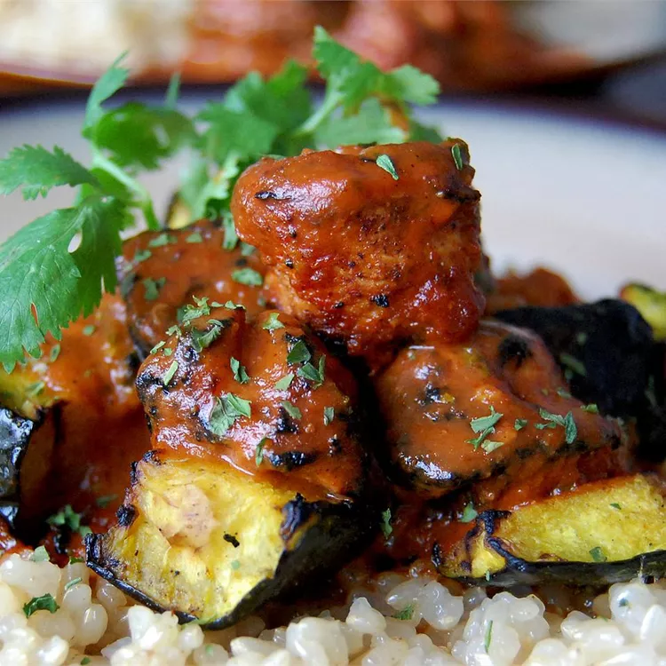

Chicken Tikka Masala

Chicken tikka masala made easy with this great-tasting recipe — simply marinate chicken breast in yogurt and spices and then simmer in a tomato cream sauce. Serve with rice or warm pita bread.